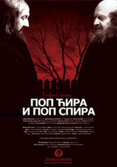
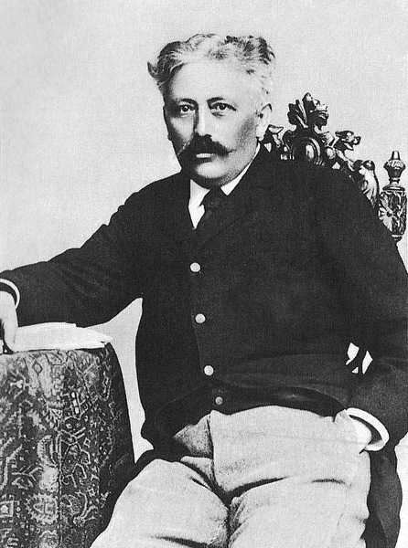

„Pop Ćira i pop Spira“ je roman Stevana Sremca i ujedno njegovo najpopularnije delo. Tematski je vezan za piščev rodni kraj, jednu od tri sredine koje je Sremac prikazivao u svojim književnim delima. Sremčev šaljivi spev (koji je autor ostavio u rukopisu) „Bal u Elemiru“ svojevrsna je najava romana o dvojici popova. Prva, kraća verzija romana (samo delimično sačuvana) objavljena je 1894. godine, u listu „Budućnost“, a druga, definitivna verzija 1898, najpre u nastavcima u časopisu „Brankovo kolo“, a potom i kao zasebna knjiga. U osnovi „Popa Ćire i popa Spire“ je anegdota o svađi i tuči dvojice popova, koju je piscu ispričao njegov ujak Jovan Đorđević. (Ova anegdota je poreklom iz Banata, i ima više verzija.)
Stevan Sremac je anegdotu sa ovakvim razvojem radnje preuzeo i obogatio mnoštvom slika, poglavlja, novih situacija, likova i, pre svega, nepresušenim i penušavim humorom. U središtu romana su dva popa i njihove porodice. Jedan je pop Ćira, a drugi je pop Spira. Prvog su seljaci zvali pop Hala (žderonja) jer je mnogo jeo, posebno krofne (mogao je pojesti punu veš korpu krofni). Drugi je pak bio poznat kao pop Kesa, jer je voleo na svadbama, sa decom, da sakuplja sitan novac kad kum počne da baca na znak: „Kume, izgore kesa!“
Stevan Sremac (Senta, 11. novembar 1855 — Sokobanja, 12. avgust 1906) bio je srpski pisac epohe realizma i akademik.[1] Kako su njegovi roditelji preminuli dok je još bio dete, o Stevanu se brinuo njegov ujak, Jovan Đorđević, srpski književnik. Stevan Sremac je učestvovao u ratovima 1876-1878. godine. Školovao se i odrastao u Beogradu, a počeo je kasno da se bavi književnošću, u svojim tridesetim godinama. Pripadao je epohi realizma, a njegova najpoznatija dela su Ivkova slava, Pop Ćira i pop Spira i Zona Zamfirova.
Što je retkost u srpskoj književnosti, Sremac nije počeo pisati kao mlad čovek, na đačkoj klupi, no kao zreo čovek, tek pred 1890. Pod šifrom »Senićanin« počeo je u Bosanskoj vili 1888. objavljivati svoje poetske slike iz srpske istorije. 1889. izišla je njegova prva satirična pripovetka u niškom listu Stara Srbija za 1889. Ali na javnost je izbio i glas stekao tek pripovetkom Ivkova slava koja se pojavila 1895. u Srpskom pregledu. Ohrabren tim velikim uspehom, on je stao živo raditi, i za desetak godina objavio znatan broj radova, nekoliko romana i ceo jedan niz humorističnih i satiričnih pripovedaka.
Godine 1957. snimljen je istoimeni film rediteljke Soje Jovanović, koji je bio prvi jugoslovenski film u boji. Soja Jovanović je 1982. režirala i televizijsku seriju Pop Ćira i Pop Spira.